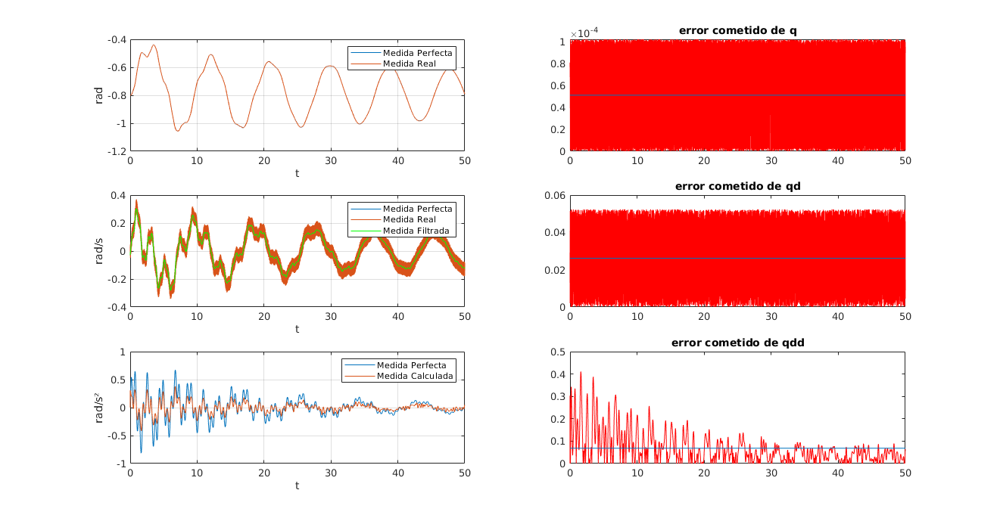

clear all; load('modeloSimbolico.mat'); % Loguitud de eslabones l0 = 0.4; % Eslab�n 5 l1 = 0.5; % Eslab�n 1 l2 = 1; % Eslab�n 2 l3 = 0.5; % Eslab�n 9 % Reductoras de los motores R1 = 50; R2 = 30; R3 = 15; % Ganancias de los motores K1 = 0.5; K2 = 0.4; K3 = 0.35; R = diag([R1 R2 R3]); K = diag([K1 K2 K3]); Gamma_exp = []; Im_R_K_exp = []; g=9.81; % Creamos un filtro para filtrar datos del tacometro % [Numeradorf,Denominadorf] = butter(1,4*Ts/2,'Low'); d = designfilt('lowpassfir', ... 'PassbandFrequency',0.005,'StopbandFrequency',0.015, ... 'PassbandRipple',0.2,'StopbandAttenuation',120, ... 'DesignMethod','equiripple'); qdrealfiltered = filtfilt(d,qdreal); % Aplicamos el filtro obtenido a la velocidad % qdrealfiltered = filter (Numeradorf,Denominadorf,qdreal); % Derivamos la poscion filtrada para obtener la velocidad for i=1:1:length(Ireal) if (i==1) qddreal(i,1)=qdd(i,1); qddreal(i,2)=qdd(i,2); qddreal(i,3)=qdd(i,3); else qddreal(i,1)=(qdrealfiltered(i,1)-qdrealfiltered(i-1,1))/(2*Ts); % Velocidad qddreal(i,2)=(qdrealfiltered(i,2)-qdrealfiltered(i-1,2))/(2*Ts); % Velocidad qddreal(i,3)=(qdrealfiltered(i,3)-qdrealfiltered(i-1,3))/(2*Ts); % Velocidad end end
figure('units','normalized','outerposition',[0 0 1 1]) slt = subplot(3,2,1); plt = plot(tout,q(:,2),t,qreal(:,2)); set(plt(1),'DisplayName','Medida Perfecta'); set(plt(2),'DisplayName','Medida Real'); legend(slt,'show'); grid; ylabel('rad'); xlabel('t'); slt = subplot(3,2,3); plt = plot(tout,qd(:,2),t,qdreal(:,2),t,qdrealfiltered(:,2),'g'); set(plt(1),'DisplayName','Medida Perfecta'); set(plt(2),'DisplayName','Medida Real'); set(plt(3),'DisplayName','Medida Filtrada'); legend(slt,'show'); grid; ylabel('rad/s'); xlabel('t'); slt = subplot(3,2,5); plt = plot(tout,qdd(:,2),t,qddreal(:,2)); set(plt(1),'DisplayName','Medida Perfecta'); set(plt(2),'DisplayName','Medida Calculada'); legend(slt,'show'); grid; ylabel('rad/s²'); xlabel('t'); subplot(3,2,2); plot(tout(1:fin/Ts),abs(q(1:fin/Ts,2)-qreal(1:fin/Ts,2)),'r'); hold on; line([0 fin], [mean(abs(q(1:fin/Ts,2)-qreal(1:fin/Ts,2))) mean(abs(q(1:fin/Ts,2)-qreal(1:fin/Ts,2)))]); hold on; title('error cometido de q'); subplot(3,2,4); plot(tout(1:fin/Ts),abs(qd(1:fin/Ts,2)-qdreal(1:fin/Ts,2)),'r'); hold on; line([0 fin], [mean(abs(qd(1:fin/Ts,2)-qdreal(1:fin/Ts,2))) mean(abs(qd(1:fin/Ts,2)-qdreal(1:fin/Ts,2)))]); hold on; title('error cometido de qd'); subplot(3,2,6); plot(tout(1:fin/Ts),abs(qdd(1:fin/Ts,2)-qddreal(1:fin/Ts,2)),'r'); hold on; line([0 fin], [mean(abs(qdd(1:fin/Ts,2)-qddreal(1:fin/Ts,2))) mean(abs(qdd(1:fin/Ts,2)-qddreal(1:fin/Ts,2)))]); hold on; title('error cometido de qdd'); fprintf('Resutlado de filtrar y calcular datos.\n');
Resutlado de filtrar y calcular datos.
Eliminamos el primer segundo de muestras y cojemos 1 de cada 10
qe = qreal(1000:10:end,:); qde = qdrealfiltered(1000:10:end,:); qdde = qddreal(1000:10:end,:); Ime = Ireal(1000:10:end,:); % La matriz gamma la rellenamos con datos muestreados y derivados for i=1:1:length(Ime) %fprintf('Evaluando gamma... %f%%',100*i/length(Ime)); q1 = qe(i,1); q2 = qe(i,2); q3 = qe(i,3); qd1 = qde(i,1); qd2 = qde(i,2); qd3 = qde(i,3); qdd1 = qdde(i,1); qdd2 = qdde(i,2); qdd3 = qdde(i,3); % Con ese bucle tenedremos una matriz de gamma con todos los experimeitos y otra % Matriz con las excitaciones del motor Gamma_exp = [Gamma_exp; eval(Gamma_reduced)]; Im_R_K_exp = [Im_R_K_exp; K*R*Ime(i,:)']; %fprintf(repmat('\b',1,length(sprintf('Evaluando gamma... %f%%',100*i/length(Ime))))); end fprintf('Done!\n'); % Hacemos la pseudoinversa con (pinv)lscov % Nos dar� theta_hat que los las estimaciones de los parametros fprintf('Calculating parameters...\n'); Theta_hat = lscov(Gamma_exp,Im_R_K_exp); fprintf('Done!\n'); % La dimension de gamma tiene que ser de numero de muestras por numero de parametnros [num_exp,num_param] = size(Gamma_exp); % Cuanto vale la estimacion % Estimar cuanto vale la sigma p en base de las medidas y lo que he medido sigma_p_2 = (norm(Im_R_K_exp-Gamma_exp*Theta_hat)^2)/(num_exp-num_param); % Matriz de varianza-covarianbza del error: C_param = sigma_p_2*inv(Gamma_exp'*Gamma_exp); fprintf('Desviacion estandar relativa\n'); for j=1:num_param Sigma(j) = sqrt(C_param(j,j)); Sigma_r(j) =100*(Sigma(j)/Theta_hat(j)); fprintf('Desviacion: %d: %f. \t\t parametro: %s\n',j,Sigma_r(j),char(Theta_reduced(j))); end Theta_hat (6) = 0.0008; Theta_hat (10) = 0.0013; clear q1 qd1 qdd1 q2 qd2 qdd2 q3 qd3 qdd3 g syms q1 qd1 qdd1 q2 qd2 qdd2 q3 qd3 qdd3 g real fprintf('\nPresiona Enter para calcular modelo.\n'); pause(); fprintf('Applicando Newton-Euler...\n'); Tau = eval(Gamma_reduced*Theta_hat) syms T1 T2 T3 real; T1 = Tau(1,:); T2 = Tau(2,:); T3 = Tau(3,:); %Primera ecuaci�n %-------- %Calculo de los terminos de la inercia(afines a qdd) M11=diff(T1,qdd1); Taux=simplify(T1-M11*qdd1); M12=diff(Taux,qdd2); Taux=simplify(Taux-M12*qdd2); M13=diff(Taux,qdd3); Taux=simplify(Taux-M13*qdd3); %Taux restante contiente Centripetos/Coriolis(V) y Gravitatorios(G) %T�rminos gravitarorios dependen linealmente de 'g' G1 = diff(Taux,g)*g; Taux = simplify(Taux-G1); %Taux contiene t�rminos Centripetos/Coriolis V1 = Taux; %Segunda ecuaci�n M21 = diff(T2,qdd1); Taux = simplify(T2-M21*qdd1); M22 = diff(Taux,qdd2); Taux = simplify(Taux-M22*qdd2); M23 = diff(Taux,qdd3); Taux = simplify(Taux-M23*qdd3); %Taux restante contiente Centripetos/Coriolis(V) y Gravitatorios(G) %T�rminos gravitarorios dependen linealmente de 'g' G2=diff(Taux,g)*g; Taux=simplify(Taux-G2); %Taux contiene t�rminos Centripetos/Coriolis V2=Taux; %Tercera ecuaci�n M31=diff(T3,qdd1); Taux=simplify(T3-M31*qdd1); M32=diff(Taux,qdd2); Taux=simplify(Taux-M32*qdd2); M33=diff(Taux,qdd3); Taux=simplify(Taux-M33*qdd3); %Taux restante contiente Centripetos/Coriolis(V) y Gravitatorios(G) %T�rminos gravitarorios dependen linealmente de 'g' G3=diff(Taux,g)*g; Taux=simplify(Taux-G3); %Taux contiene t�rminos Centripetos/Coriolis V3=Taux; %Simplificar expresiones M11=simplify(M11); M12=simplify(M12); M13=simplify(M13); M21=simplify(M21); M22=simplify(M22); M23=simplify(M23); M31=simplify(M31); M32=simplify(M32); M31=simplify(M33); V1=simplify(V1); V2=simplify(V2); V3=simplify(V3); G1=simplify(G1); G2=simplify(G2); G3=simplify(G3); g = 9.81; %Aplicaci�n en matrices y vectores M_num = [M11 M12 M13;M21 M22 M23;M31 M32 M33] V_num = [V1 V2 V3]' G_num = eval([G1 G2 G3]') fprintf('Hecho!\n\n'); fprintf('Generando funcion para simulink...\n'); syms q1 q2 q3 dq1 dq2 dq3 Im1 Im2 Im3 real q = [q1 q2 q3]'; qd = [qd1 qd2 qd3]'; Im = [Im1 Im2 Im3]'; % Reductoras de los motores R1 = 50; R2 = 30; R3 = 15; % Ganancias de los motores K1 = 0.5; K2 = 0.4; K3 = 0.35; R = diag([R1 R2 R3]); Kt = diag([K1 K2 K3]); g = 9.81; qdd = inv(M_num)*(Kt*R*Im - V_num - G_num); save('../Control/modeloReal.mat','M_num','V_num','G_num','Kt','R'); matlabFunction(qdd,'file','modeloReal','vars',{[qd;q],Im}); fprintf('Terminado.\n\n');
Done!
Calculating parameters...
Done!
Desviacion estandar relativa
Desviacion: 1: 0.689964. parametro: Jm1 + Ixx2/R1^2 + Iyy1/R1^2 + Iyy3/R1^2 - Izz3/R1^2
Desviacion: 2: 2.390359. parametro: Bm1
Desviacion: 3: -4.948723. parametro: Iyy2 - Ixx2 + Lc2^2*m2 - l2^2*m2 - l2^2*m3
Desviacion: 4: -0.097318. parametro: Lc2*m2 - l2*m2 - l2*m3
Desviacion: 5: 0.269996. parametro: Jm2 + Ixx2/R2^2 - Iyy2/R2^2 + Izz2/R2^2
Desviacion: 6: 76.838072. parametro: Bm2
Desviacion: 7: -4.023745. parametro: Izz3 + Lc3^2*m3 - l3^2*m3
Desviacion: 8: -0.302121. parametro: Lc3*m3 - l3*m3
Desviacion: 9: 1.937635. parametro: Jm3
Desviacion: 10: 21.777343. parametro: Bm3
Desviacion: 11: -13.958682. parametro: Ixx3 - Iyy3 + Izz3
Presiona Enter para calcular modelo.
Applicando Newton-Euler...
Tau =
(3492354207892321*qd1)/1125899906842624 + (41658539340612823*qdd1)/1125899906842624 + (6488769689148601*qdd1*cos(2*q2))/2251799813685248 + (1041339867668763*qdd1*cos(2*q2 + 2*q3))/9007199254740992 + (68402539804209*qdd1*cos(q3))/70368744177664 + (68402539804209*qdd1*cos(2*q2 + q3))/70368744177664 - (68402539804209*qd1*qd3*sin(q3))/70368744177664 - (68402539804209*qd1*qd2*sin(2*q2 + q3))/35184372088832 - (68402539804209*qd1*qd3*sin(2*q2 + q3))/70368744177664 - (6488769689148601*qd1*qd2*sin(2*q2))/1125899906842624 - (1041339867668763*qd1*qd2*sin(2*q2 + 2*q3))/4503599627370496 - (1041339867668763*qd1*qd3*sin(2*q2 + 2*q3))/4503599627370496
(18*qd2)/25 + (147057967517680151*qdd2)/1125899906842624 - (703206500895889*qdd3)/562949953421312 - (68402539804209*qd3^2*sin(q3))/70368744177664 + (68402539804209*qd1^2*sin(2*q2 + q3))/70368744177664 + (68402539804209*g*cos(q2 + q3))/70368744177664 + (6488769689148601*qd1^2*sin(2*q2))/2251799813685248 + (5603940918736859*g*cos(q2))/1125899906842624 + (1041339867668763*qd1^2*sin(2*q2 + 2*q3))/9007199254740992 + (68402539804209*qdd2*cos(q3))/35184372088832 + (68402539804209*qdd3*cos(q3))/70368744177664 - (68402539804209*qd2*qd3*sin(q3))/35184372088832
(117*qd3)/400 - (703206500895889*qdd1)/562949953421312 - (703206500895889*qdd2)/562949953421312 + (6730926518466217*qdd3)/1125899906842624 + (68402539804209*qd1^2*sin(q3))/140737488355328 + (68402539804209*qd2^2*sin(q3))/70368744177664 + (68402539804209*qd1^2*sin(2*q2 + q3))/140737488355328 + (68402539804209*g*cos(q2 + q3))/70368744177664 + (1041339867668763*qd1^2*sin(2*q2 + 2*q3))/9007199254740992 + (68402539804209*qdd2*cos(q3))/70368744177664
M_num =
[ (68402539804209*cos(2*q2 + q3))/70368744177664 + (6488769689148601*cos(2*q2))/2251799813685248 + (1041339867668763*cos(2*q2 + 2*q3))/9007199254740992 + (68402539804209*cos(q3))/70368744177664 + 41658539340612823/1125899906842624, 0, 0]
[ 0, (68402539804209*cos(q3))/35184372088832 + 147057967517680151/1125899906842624, (68402539804209*cos(q3))/70368744177664 - 703206500895889/562949953421312]
[ 6730926518466217/1125899906842624, (68402539804209*cos(q3))/70368744177664 - 703206500895889/562949953421312, 6730926518466217/1125899906842624]
V_num =
-(qd1*(25955078756594404*qd2*sin(2*q2) + 1041339867668763*qd2*sin(2*q2 + 2*q3) + 1041339867668763*qd3*sin(2*q2 + 2*q3) + 4377762547469376*qd3*sin(q3) + 8755525094938752*qd2*sin(2*q2 + q3) + 4377762547469376*qd3*sin(2*q2 + q3) - 13969416831569284))/4503599627370496
(18*qd2)/25 - (68402539804209*qd3^2*sin(q3))/70368744177664 + (68402539804209*qd1^2*sin(2*q2 + q3))/70368744177664 + (6488769689148601*qd1^2*sin(2*q2))/2251799813685248 + (1041339867668763*qd1^2*sin(2*q2 + 2*q3))/9007199254740992 - (68402539804209*qd2*qd3*sin(q3))/35184372088832
(117*qd3)/400 + (68402539804209*qd1^2*sin(q3))/140737488355328 + (68402539804209*qd2^2*sin(q3))/70368744177664 + (68402539804209*qd1^2*sin(2*q2 + q3))/140737488355328 + (1041339867668763*qd1^2*sin(2*q2 + 2*q3))/9007199254740992
G_num =
0
(67102891547929029*cos(q2 + q3))/7036874417766400 + (5497466041280858679*cos(q2))/112589990684262400
(5368231323834323*cos(q2 + q3))/562949953421312
Hecho!
Generando funcion para simulink...
Terminado.